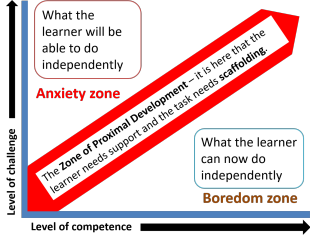

Teaching one-to-one

Many teachers, especially the newly qualified, find themselves
teaching one-to-one lessons for which they have not been prepared by
their training course(s).
Few initial or in-service courses focus specifically on the area and
the assumption is, presumably, that qualified teachers can simply
adapt classroom teaching to the one-to-one setting.
That may be the case but there seems to be a role for a guide to how
to get the best out of the setting and how to avoid the worst
pitfalls.
There is an important difference in the roles you may take on when teaching one to one. You may be:
- A mentor
In this case, the learner is operating almost wholly independently with little input from you.
Your responsibility is to direct the learner's efforts and assess progress. You are not teaching – the materials do the teaching and you do the directing and assessing of progress.
In this sense, you are more like a supervisor than a teacher. - An instructor
In this case, you are teaching. You do the preparation, supply the majority of the materials, set the tasks, explain language systems and skills and assess the outcomes.
In what follows, the assumption is that you are in this role.
In the following there are numerous links to other guides on this site and all the links open in a new tab. At the end, they are repeated but do not open in new tabs.
 |
What's so special about one-to-one instruction? |
One-to-one teaching has a number of characteristics which
distinguish it from group teaching (even if the group is small).
Group teaching of two or more people allows for a number of
classroom techniques not available to the one-to-one teacher such as
mingling exercises, pair work, collaborative learning and so on.
Here's a run-down of the essential differences with some comment
concerning the advantages that they bestow and the disadvantages we
need to ameliorate.
| One-to-one teaching | Advantages | Disadvantages | Group teaching | Advantages | Disadvantages |
| Instructions is personalised: the learner's unique strengths and weakness can be addressed directly. | Teaching is very accurately targeted (or can be). | The learner and the teacher may be unaware of weaknesses which have not been identified. | Teaching is aimed at the whole group's strengths and weaknesses. | Strengths and weaknesses may be identified which were not hitherto recognised. | There is competition between learners for attention to individual needs. |
| The teacher's attention is constant and undivided. | This allows the learner to speak almost as much as desired and to receive personalised and direct feedback and support. |
The learner cannot sit back and process input at leisure. Being always on the spot is stressful and can be exhausting. |
The teacher's attention is divided. | Learners are not continually on the spot and can sit back a little to process input quietly at their own pace | In most lessons, with a group of 12, learners will, on average get individual support attention for 1 minute and 40 seconds. |
| Tasks are completed by an individual at the learner's pace and silences are not tolerated. | Pressure to complete tasks is reduced and tasks are more likely to be successfully completed. | There is no pressure so learners may relax and work too slowly with insufficient task authenticity. | Silences can be planned in for individual lock-step writing and other tasks. | Learners are aware that time is limited so will work hard to complete tasks. | Learners may finish tasks unevenly: some may not complete tasks adequately while others are idle. |
| The learner can manipulate the lesson topic by raising personal concerns, and bringing material from outside. | This raises motivation because materials and topics which originate in the learner are more personalised and engaging. | The teacher may not be prepared to deal with unusual topics or materials on the spot and may fail to exploit them effectively. | The syllabus, materials and topics are not personalised and need to cater for all members of the group. | Learners get exposure to a well-ordered syllabus and to language they may not have realised they need. | Topics and materials will not engage all learners equally and some may be uninterested or even repelled by some. |
| The teacher's input language can be carefully tailored to just above the learner's current mastery. | The learner will always be operating in the optimum zone of proximal development. | The learner may not be adequately challenged to go beyond current mastery levels. | The teacher's input has to be aimed at the weakest learners in the group. | All learners can follow. | Time may be wasted for some while input is decoded by slower or less able learners. |
| The lesson format can be tailored to the preferences of the individual. | The learner can be reassured by having the preferred kinds of lesson. | The lessons may become predictable, monotonous and boring (for both participants). | Lessons formats are varied to take account of a range of preferences. | Variety is maintained. | Some learners may respond to some lesson and task types less well than others. |
| There are only two participants. | Focus is maintained. | Many techniques are impractical. | There is a range of participants. | Novelty and variation in task types and techniques engage learners. | Some procedures and tasks types may be unappealing to some learners who will disengage. |
We'll take all these areas one at a time and see how opportunities can be taken to exploit the advantages and actions taken to reduce the impact of disadvantages.
 |
Personalised instruction |
The most obvious advantage of one-to-one teaching is the syllabus
content which can be finely tuned to the learner's needs, strengths
and weaknesses. However, to take full advantage, it is,
naturally, important that you actually have a
syllabus.
Some learners are more sophisticated than others and know to a
nicety exactly what they need to learn, what skills they need to
learn and how well they need to perform. They are the easy
ones.
Others may just need some one-to-one tuition to catch up with or
join a regular class and they, too, are easy to accommodate
providing you know what the syllabus of the class is.
It is more difficult to cater to the needs of learners who have little idea what they need and for them you will need do two things:
- Design and administer a proper needs analysis.
- Design and administer a diagnostic test to see how far towards their needs they will have to travel.
On this site, there is a guide to constructing and administering a needs analysis for:
- Learners who need English for Business (often concerned with
having one-to-one tuition).
Click here to open that guide in a new tab. - General English learners who need English for less well
defined purposes.
Click here to open that guide in a new tab.
In either case, there are some key areas to consider:
- setting
- in what settings (work, school, university, social encounters, with native speakers, dealing with officialdom etc.) does the subject need to use English?
- skills
- does the learner need to deploy all four skills or are some of them more important than others?
- sub-skills
- of the important ones, are there particular subskills (such as writing e-mails, giving oral presentations etc.) that the learner needs?
- accuracy levels
- is it important that the learner focuses on producing accurate language or is basic communicative competence the aim?
- functions
- are there specific functions (such as asking for permission, inviting, offering, declining etc.) which are particularly important for this learner?
- notions
- are there particular notions (such as arrangement of objects, degree, motion etc.) which the learner needs to be able to handle successfully?
- registers
- are there particular registers (academia, engineering, the military, air transport, tourism etc.) in which the learner will have to use English and will need the lexical and structural means to do so?
- learning preferences
- does the learner have a clear idea of how learning happens? You would be foolish to ignore the prejudices that a one-to-one learner brings to a course. You need to work together no matter how naïve or misguided you think the learner is in this respect.
Once you have a list of what's required you can construct a test
to see where the learner currently is. To do that, you will
need to have an understanding of validity more than reliability
(because you are only focused on one learner).
There is, of course a guide to testing on this site, two, in fact:
Click
here to open the essential guide.
Click here to
open the more advanced guide.
There are two good reasons for carrying out a thorough needs analysis and administering a diagnostic test:
- The learner may have needs hitherto unconsidered which a thorough needs analysis questionnaire or interview (or both) may identify.
- It reassures and encourages the learner that you are taking your professional responsibilities seriously and are concerned to meet the learner's needs as exactly and completely as possible. That gets you off to a good start.
It is, however, not uncommon for learners to say something like:
I just want to be better at communicating and
taking part in conversations in English.
and if that is the case, you will need to construct a
conversational course with lots of opportunities to take the learner
out of the comfort zone and expose him or her to topics and
functions in spoken English that are novel and demanding as well as
motivating and challenging.
You can, in fact, take a Dogme approach to such a course and let
conversation drive the teaching. It will mean you need to
think on your feet and avoid allowing the lessons to degenerate into
chit-chat in which the learner is simply deploying language already
mastered and learning too little.
The teacher's undivided attention |
While many learners see this as an advantage (and are prepared to pay for it, or persuade someone else to), constant monitoring of one's performance can become trying and may even be threatening and exhausting.
It is, of course, a huge advantage for the learner to receive the teacher's undivided attention but you need to lighten the load from time to time. This concerns how you respond to the learner and there are two ways to do that:
- Respond to the form of the learner's production (written or
oral).
This is stressful for learners who, although they often say they want to be consistently corrected, do not mean that they want to be constantly corrected.
You need to decide as you go along how much feedback of what kind is likely to be assimilated by the learner. Too much and it becomes interruptive and dispiriting, too little and you aren't seen to be doing your job. Individual tolerance levels and abilities to absorb correction are very variable so look out for signs of distraction and tiredness and go easy when you see them.
There is a guide to correction on this site which sets out the criteria you should consider before diving in and correcting a learner. Click here to open it in a new tab. - Respond to the content of the learner's production.
Learners, especially in one-to-one settings, will frequently want to talk about things which are of personal relevance to themselves and need to be given the opportunity to do so. It pays dividends from time to time to focus the lesson on mutual disclosure. You will need to open up a little about yourself to get the learner to reciprocate in most cases.
You need to judge when the time is right to ignore error and concentrate on what is being said, not how it is being said.
If you are skilled enough, you can even take physical or mental notes as you go and focus on the language areas later on in the lesson.
 |
Tasks and silence |
An advantage of one-to-one teaching is that any task you set is
completed in the learner's own time and at the learner's own pace.
Obscurely, some teachers feel that they are somehow in dereliction
of duty if the learner is doing a task (which has been laboriously
prepared and targeted) and they are apparently doing nothing.
Most learners do not feel that way and appreciate a bit of time and
space to absorb the data they have encountered in the task.
Do not be afraid of silence – it is in periods of silent
thought and contemplation that a great deal of learning happens.
Taken too far, of course, and the reverse effect will become evident. Any task that takes more than about 5 minutes of one-to-one time is probably too long and learners may well ask why they aren't doing it at home and getting feedback from you in paid time.
The moral is to pepper lessons with short achievable tasks which are rich in content and provide good opportunities for helpful feedback.
 |
A note on teaching language skills one-to-one |
One-to-one learners get a great deal of speaking and listening practice because they are the only other person involved. The temptation is to assume that no further practice in these two areas is required. But it often is.
- Listening
- The sort of listening practice the learner is getting is
listening to you explain, comment, give feedback and manage the
lesson. That's useful but if the learner needs to improve
more general listening skills, you'll need to gather a range of
text types and put together tasks to develop subskills too.
Many listening tasks have to be carried out in real time with no
opportunity to replay the tape or get the speaker to repeat.
These sorts of tasks need to be done in lesson time.
A TV, laptop or other playback device is invaluable. - Speaking
- Again, the learner may be getting plenty of speaking
practice asking questions and responding to you but you also
need to focus on role playing other situations and practising
the appropriate language in a variety of settings. The
learner or needs analysis will tell you what they should be.
You, as much as the learner, need to be prepared to take on a range of roles. - Writing
- It is sometimes assumed that writing and reading practice
should be done outside of class times but that's not always the
case.
A simple writing exercise to undertake from time to time is for both you and the learner to take a vow of silence for, say, 20 minutes and communicate only by writing on tear-off pages of notebooks. It forces the learner to write quickly and intelligibly but also allows you to take advantage of the learner's output to revisit language or teach new structures and lexis. - Reading
- Long reading texts are probably best handled as out-of-class
tasks because it is unproductive (and exceptionally dull) for
you to sit and watch the learner read for more than a few
minutes.
However, tasks which are designed to be done in real time to develop subskills need to be tackled. There is little point in trying to develop scanning skills, for example, by asking the learner to access the text at home. The learner needs a time limit and a bit of pressure to learn to deploy the skill authentically.
That is something that often needs to be explained to the learner
 |
The syllabus within the learner |
If a group of learners each have three things they would like to
discuss this week, it is very unlikely that you will be able to
cater for more than a small fraction of them.
In a one-to-one situation, it is very unlikely that you won't have
time to address all of them.
That's an advantage to be aware of and exploit.
If you have carried out a proper needs analysis or even just
taken the time to get to know your learner, you will be able to
identify topics which will appeal and set the language and skills
syllabus within the topics.
But it's not just your choice that matters.
For example, if your aim is to work on the subskills needed to
overcome potentially blocking lexis in a reading or listening text,
it really does not matter to you what the text has for a topic.
Providing you get early sight of it so you have time to prepare, any
text which contains lexis significantly but not absurdly above your
learner's level will do.
With a little encouragement and training, most learners find it
challenging and motivating to be in charge of selecting at least
some of the materials to be used in the lessons.
Once the learner has selected materials a few times, you will be
much better placed to select those of your own which you know will
appeal and appear relevant and engaging.
In the zone |
Here we need a bit of theory. There is a guide on this
site to scaffolding and the Zone of Proximal Development that you
may like to read through.
You can open it in a
new tab by clicking here.
Here's a quick summary:
The Zone of Proximal Development
or the ZPD it is the learning zone in which the learner can
achieve the task with input
from someone who knows more (you). It lies between tasks which the
learner can already do without help (so won't learn much) and tasks
which the learner cannot even attempt (so won't learn much). If
the task is too easy, the learner will get bored. If it's too hard
the learner will become anxious.
The diagram from that guide is:

Your task is, naturally, to make sure that the input you give
(i.e., the language you use, the tasks you set and the materials you
employ) are set in the red zone in this diagram. It is there, so the
theory goes, that learning will happen.
The advantage of one-to-one teaching in this respect is obvious
enough: you only have one zone to deal with at a time. So:
- Do not set tasks that your learner will find easy. You need to inject adequate challenge.
- Do not set tasks which are rich in content but have too much content. You will overwhelm the learner and make your own life difficult because there is just too much to explain.
Where the happy medium lies is something that you will need to
learn about the person you are teaching and it will vary depending
on the skill type and the sorts of knowledge the learner needs to
bring to the task.
Of course, if you have administered a proper diagnostic test at the
outset, finding the learner's ZPD is much easier.
For a guide to Bloom's taxonomy which is a popular and useful way of assessing the cognitive demands that come with various task types, click here.
 |
Tailoring the format of lessons |
Here we are considering lesson shape, not content. That's
done above.
One-to-one teaching allows all lesson shapes to be acceptable to the
learner whereas teaching groups requires more variation to appeal to
everyone fairly and to provide some variety.
Individuals, however, need variety, too.
This is where your preferences are overridden by the learner's.
You may, for example, be convinced of the advantages of a Test–Teach–Test
approach to lesson design with lots of opportunities for inductive
learning and little reliance on providing rules except those which
the learners discover.
That's fine (if a little rigid) but if you take this approach with a
learner who likes rules and enjoys the problem-solving nature of
applying rules to raw data and is simultaneously irritated by being
asked to do something beyond his or her capacity, then you are going
to encounter serious problems.
This is not to say that having identified that you have a learner who likes lessons structured in a particular way that you cannot depart from the structure to inject a bit of variety. In fact, you should, because:
- Certain lesson shapes and structures lend themselves to particular skills and materials better than others.
- Your learner may not be aware of alternative lessons shapes and find the change challenging and intriguing.
One-to-one lessons can very easily become monotonous and dull if
you allow them to so you need to vary both lesson structure and task
types. The following open in new tabs so you can remind
yourself of just some of the possible alternatives:
Guide to lesson structures.
Guide to activity types.
Guide to task types.
|
|
Translation |
It is often the case that a one-to-one teacher can speak the
language of the learner.
While there is an obvious danger of overusing the learner's first
language and allowing the lesson to degenerate into chatting (or,
worse, an opportunity for the teachers to improve their own language
skills), there is an obvious advantage or two because the teacher
will be aware of specific inter-lingual difficulties and errors that
are likely to arise and tricky but unusual lexis can be easily
explained to move on to more important matters.
There is a guide to using translation which opens in a new tab here.
| Guides referred to in this page | |
| needs analysis for Business English | specifically for a business context |
| needs analysis | for general English learners |
| essential guide to testing | in the initial plus section so quite basic |
| testing | a fuller guide to the area |
| correction | a simple guide in the initial plus section |
| scaffolding and the ZPD | for more on the theory and practice of exploiting the Zone of Proximal Development |
| structuring lessons | a simple guide in the initial plus section |
| activity types | for a guide to the three essential forms of activities and what they do |
| task types | a simple guide in the initial plus section |
| translation | the guide in this section of the site |
| Bloom's taxonomy | this is a way of classifying the cognitive demands that tasks place on learners |